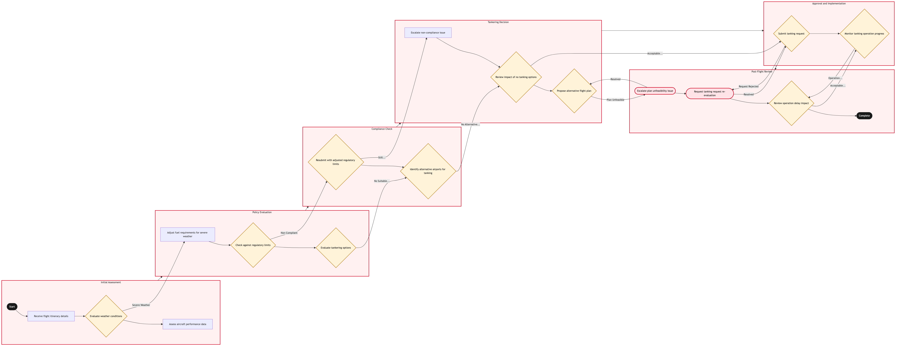

Updated 2026-08-21
Fuel Policy Application and Tankering Decision
Process flow
Click to zoom

Process steps
▼
Phase 1 — Initial Assessment
3 steps
| Step | Activity | Role | System | Input | Output | KPI | Dec | Exc | Pain point |
|---|---|---|---|---|---|---|---|---|---|
| 1.1 | Receive flight itinerary details | YYZ Operations Control Duty Manager | NetLine/OpsB | Flight plan, crew schedule, weather data | Initial fuel requirement assessment | Time to receive and process initial data < 15 minutes | N | N | Delays in receiving real-time flight itinerary updates can lead to inaccurate fuel calculations. |
| 1.2 | Evaluate weather conditions | Flight Dispatcher | NAV CANADAB | Weather forecast, NOTAMs | Weather impact assessment | Time to evaluate and update weather data < 5 minutes | Y | N | Inaccurate weather forecasts can lead to over-fueling or under-fueling, affecting flight safety. |
| 1.3 | Assess aircraft performance data | Flight Dispatcher | ACARS DatalinkC | Aircraft performance logs, OOOI times | Performance impact assessment | Time to analyze performance data < 10 minutes | N | N | Outdated or incomplete aircraft performance data can result in incorrect fuel calculations. |
▼
Phase 2 — Policy Evaluation
3 steps
| Step | Activity | Role | System | Input | Output | KPI | Dec | Exc | Pain point |
|---|---|---|---|---|---|---|---|---|---|
| 2.1 | Adjust fuel requirements for severe weather | Flight Dispatcher | NetLine/OpsB | Weather impact assessment, initial fuel requirement | Adjusted fuel requirement | Time to adjust fuel requirements < 10 minutes | N | N | Manual adjustments can introduce human error in critical calculations. |
| 2.2 | Check against regulatory limits | Regulatory Compliance Officer | Jeppesen OCCB | Adjusted fuel requirement, regulatory guidelines | Compliance report | Time to generate compliance report < 5 minutes | Y | N | Misinterpretation of regulatory limits can lead to non-compliance and potential fines. |
| 2.3 | Evaluate tankering options | Flight Dispatcher | NAV CANADAB | Adjusted fuel requirement, airport availability | Tankering plan | Time to evaluate and propose tankering options < 15 minutes | Y | N | Limited tanking infrastructure can delay flights or increase operational costs. |
▼
Phase 3 — Compliance Check
2 steps
| Step | Activity | Role | System | Input | Output | KPI | Dec | Exc | Pain point |
|---|---|---|---|---|---|---|---|---|---|
| 3.1 | Resubmit with adjusted regulatory limits | Regulatory Compliance Officer | Jeppesen OCCB | Compliance report, regulatory guidelines | Updated compliance report | Time to resubmit and generate updated report < 5 minutes | Y | N | Multiple submissions can delay the decision-making process. |
| 3.2 | Identify alternative airports for tanking | Flight Dispatcher | NAV CANADAB | Tankering plan, airport availability data | Alternative airport list | Time to identify and compile alternative airports < 10 minutes | Y | N | Limited alternative airports can increase flight delays. |
▼
Phase 4 — Tankering Decision
3 steps
| Step | Activity | Role | System | Input | Output | KPI | Dec | Exc | Pain point |
|---|---|---|---|---|---|---|---|---|---|
| 4.1 | Escalate non-compliance issue | Regulatory Compliance Officer | Jeppesen OCCB | Updated compliance report, regulatory guidelines | Non-compliance escalation ticket | Time to escalate non-compliance < 5 minutes | N | N | Escalation can delay the process and may require additional approvals. |
| 4.2 | Review impact of no tanking options | Flight Dispatcher | NetLine/OpsB | Alternative airport list, flight itinerary details | Impact assessment report | Time to review and generate impact report < 10 minutes | Y | N | Complex impact assessments can delay the decision-making process. |
| 4.3 | Propose alternative flight plan | Flight Dispatcher | Jeppesen OCCB | Impact assessment report, flight itinerary details | Alternative flight plan | Time to propose and generate alternative flight plan < 15 minutes | Y | N | Creating new flight plans can introduce operational risks. |
▼
Phase 5 — Approval and Implementation
2 steps
| Step | Activity | Role | System | Input | Output | KPI | Dec | Exc | Pain point |
|---|---|---|---|---|---|---|---|---|---|
| 5.1 | Submit tanking request | Flight Dispatcher | NetLine/OpsB | Tankering plan, airport availability data | Tanking request submission | Time to submit tanking request < 5 minutes | Y | N | Delays in submitting the request can lead to missed opportunities. |
| 5.2 | Monitor tanking operation progress | Flight Dispatcher | NetLine/OpsB | Tanking request submission, airport status updates | Operation status report | Time to monitor and update operation status < 10 minutes | Y | N | Real-time monitoring can be challenging with limited data availability. |
▼
Phase 6 — Post-Flight Review
3 steps
| Step | Activity | Role | System | Input | Output | KPI | Dec | Exc | Pain point |
|---|---|---|---|---|---|---|---|---|---|
| 6.1 | Escalate plan unfeasibility issue | Flight Dispatcher | Jeppesen OCCB | Alternative flight plan, impact assessment report | Unfeasibility escalation ticket | Time to escalate unfeasibility < 5 minutes | N | Y | Escalation can delay the process and may require additional approvals. |
| 6.2 | Request tanking request re-evaluation | Flight Dispatcher | NetLine/OpsB | Operation status report, tanking request submission | Re-evaluation request | Time to request re-evaluation < 5 minutes | N | Y | Re-evaluations can introduce delays and may require additional resources. |
| 6.3 | Review operation delay impact | Flight Dispatcher | NetLine/OpsB | Operation status report, flight itinerary details | Delay impact assessment | Time to review and generate delay impact < 10 minutes | Y | Y | Complex impact assessments can delay the decision-making process. |
Swim lanes
YYZ Operations Control Duty Manager1.1
Flight Dispatcher1.2 1.3 2.1 2.3 3.2 4.2 4.3 5.1 5.2 6.1 6.2 6.3
Regulatory Compliance Officer2.2 3.1 4.1
Systems touched
NetLine/OpsBNAV CANADABACARS DatalinkCJeppesen OCCB
Key performance indicators
- Time to receive and process initial data < 15 minutes
- Time to evaluate and update weather data < 5 minutes
- Time to analyze performance data < 10 minutes
- Time to adjust fuel requirements < 10 minutes
- Time to generate compliance report < 5 minutes
Risks and control points
- Delays in receiving real-time flight itinerary updates can lead to inaccurate fuel calculations.
- Inaccurate weather forecasts can lead to over-fueling or under-fueling, affecting flight safety.
- Limited tanking infrastructure can delay flights or increase operational costs.
- Escalation can delay the process and may require additional approvals.
- Creating new flight plans can introduce operational risks.
Air Canada Process Wiki — process and systems reference compiled from public sources
for IT Application Management and User Support pre-sales discovery.
Built 2026-08-21. Every system carries an evidence tier: tier C is an industry pattern and tier U is an open
question, and neither should be asserted as fact about Air Canada without confirmation in discovery.
Not affiliated with or endorsed by Air Canada. Air Canada, Aeroplan and Altitude are trademarks of Air Canada.